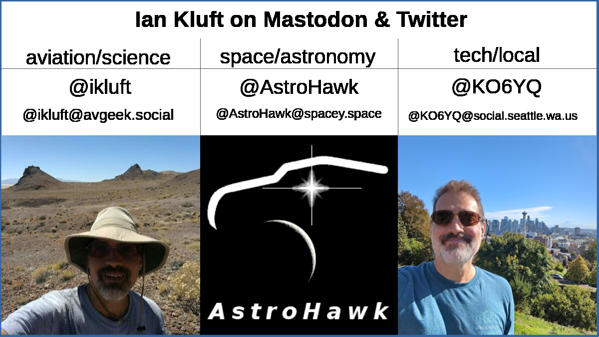
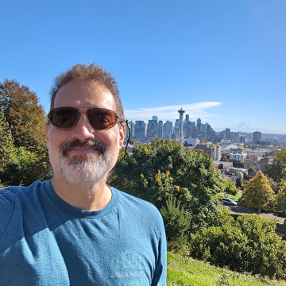

This page describes how I use various social media networks.
- Twitter
 & Mastodon
& Mastodon 
- Mastodon verification ✅
- Why not just quit Twitter?
- Parody of the Twitter icon
- @ikluft
- @KO6YQ
- @AstroHawk
- YouTube

- Reddit

- LinkedIn

- Other social media ü§™
Twitter & Mastodon

I've always had parallel interests in various aspects of technology and flight. But it didn't take long to notice that on social media, people who come for one of my interests don't always share others. So on Twitter I split up my social media presence into multiple accounts for my primary interests. Later when Twitter began its rapid downturn in late 2022, I added corresponding accounts on Mastodon.
The accounts are:
- @ikluft - aviation, science
- @KO6YQ - technology, local
- @AstroHawk - space, rockets, satellites, astronomy
These accounts are all genuinely me, just covering different topics from my interests.
When a topic straddles more than one of my topics, I'll post it from the account which is best associated with the topic and retweet/boost it from the other(s).
To set expectations appropriately, I don't necessarily follow back to people I don't know. If your profile doesn't have info about you or your name, don't expect a follow from me. Also, I try to maintain my feed so it's on topic and readable. I may follow if you post about my interests. But not if it's so much that everyone else in my feed would be drowned out by your posts.
July 2023 update: Twitter is officially rebranding as ùïè. Meh. I'll still call it Twitter. Sometimes I refer to it as the "bird site" or "birb".
Mastodon verification ✅
On Mastodon, this page provides link verification for my accounts. The verification is shown by the green check marks Mastodon displays on my user profiles, indicating this page linked to them to confirm they're mine.
Why not just quit Twitter?
Many people are leaving Twitter in disgust. Frankly, I understand. But I haven't yet.
I still have a reason not to. When one applies to attend a NASA Social event, they start by counting your social media followers and then rank you against other applicants. Until I have more followers on Mastodon, that's a reason to keep the Twitter accounts. Even after that it might still be, depending if they accept Mastodon yet.
I have attended NASA Social events such as SOFIA At Ames (2011 in Mountain View CA), SpaceX CRS-3 launch (2014 at Cape Canaveral FL), electric plane technology presentation (2014 at Edwards CA), Quiet Supersonic Technology demo (2017 at Edwards CA), ICON satellite launch (2018 at ICON mission control in Berkeley CA).
I will no longer have a need for Twitter when both of these are met:
- my @ikluft and @AstroHawk accounts on Mastodon surpass the 2000-follower mark, which is where my @ikluft account on Twitter has almost reached
- NASA Social confirms that for purposes of applying to one of their events, Mastodon follower counts are considered equivalent to Twitter followers
So for now I'm simulcasting my posts about my interests on the two systems. Currently Mastodon has an advantage for timeliness in live events because I can access it by web and mobile. I deleted the Twitter mobile app and only use it via the web interface now.
Parody of the Twitter icon
What's up with the strange Twitter icon? It's a parody of the Twitter logo patterned after their turmoil that started in 2022 with a change of management. It's turned around, turning red and has a longer beak like Pinnochio's fabled nose. üòÄ That seemed representative of what happened with Twitter, at least to an outside observer. Other than that, curves look enough like Twitter's logo to recognize it. But it's missing details. Yes, I drew this parody icon - please include attribution to me if you use it.
@ikluft

Image: my @ikluft profile image shows me at Black Rock Desert, Nevada
with hills I nicknamed "Martian Buttes" in the background
Topics: aviation, science
Twitter  : @ikluft@twitter.com (since 2009)
: @ikluft@twitter.com (since 2009)
Mastodon  : @ikluft@avgeek.social (since 2022)
: @ikluft@avgeek.social (since 2022)
My original Twitter account is @ikluft, shown here as @ikluft@twitter.com to differentiate it from Mastodon accounts. When I was appointed to the San Jose Airport Commission by the SJ City Council in 2010, I made the @KO6YQ (a.k.a. @KO6YQ@twitter.com) account to split away technology and local (such as cycling) topics.
@KO6YQ

Image: my @KO6YQ profile image shows me at Seattle's Kerry Park with the Space Needle and Mt Rainier in the background
Topics: technology/communications (computing, open source software, networking, Ham Radio)
and local (news, cycling)
Twitter  : @KO6YQ@twitter.com (since 2010)
: @KO6YQ@twitter.com (since 2010)
Mastodon  : [new Portland-area instance pending], @KO6YQ@social.seattle.wa.us (Oct-Dec 2023),
formerly @KO6YQ@sfba.social (2022-2023)
: [new Portland-area instance pending], @KO6YQ@social.seattle.wa.us (Oct-Dec 2023),
formerly @KO6YQ@sfba.social (2022-2023)
My @KO6YQ accounts cover technology topics and local topics. Technology interests include Internet, cybersecurity, Open Source software and Ham Radio. Local topics can be any relevant news in the Seattle area and Western Washington but also cycling topics and pictures from bike rides. (The local angle was previously about the San Jose/Silicon Valley area until Sept 2023.) It's the catch-all topic making it more of the personal account when other topics don't fit.
@AstroHawk
Image: my @AstroHawk profile image has an actual crescent Moon image, an artistic Sun with lens flare,
and line art to bring them together to look like a hawk
Topics: space, NewSpace industry, rockets, satellites, astronomy
Twitter  : @AstroHawk@twitter.com (since 2010)
: @AstroHawk@twitter.com (since 2010)
Mastodon  : @AstroHawk@spacey.space (since 2022)
: @AstroHawk@spacey.space (since 2022)
@AstroHawk was originally an anonymous account which stood for "Adventurous Space Tweep Reinforcing Operations Hatching Advancement Worth Kudos". The idea was some behind-the-scenes advocacy of the NewSpace (entrepreneurial space launch) movement. But in reality it hardly ever got used.
In 2022, I decided to de-anonymize it and split space topics from my @ikluft account to it. That transition is still in progress. So often the space tweets/posts from @AstroHawk are rewtweeted/boosted from @ikluft where a lot of followers came looking for that. The retweets/boosts are decreasing over time as space-topic followers find their way to @AstroHawk on Twitter and Mastodon.
YouTube
I'm @ikluft on YouTube. I've posted videos on YouTube with flying, cycling, local info and some experiments at times.
It includes my "Scenic Hop flying videos" series taken while flying airplanes, showing the whole flight in time-lapse so you can see as if you came along. In one of the videos, "Flying over Mount Lassen", a frame from it here is from when I flew a Cessna 172 up to 12,000ft/3660m to get video looking down at 10,457ft/3187m Mount Lassen in May 2014, 100 years after its 1914-1917 eruption began.
November 2023 update: I don't know if I'll use YouTube any more. They have started regarding my browser's tracker blockers as ad blockers and deny me access to the site. I'm not willing to turn off the tracker blockers, especially not for a prime offender like Google.
Reddit
I'm u/KO6YQ on Reddit.
Note 2023-06-11 and ongoing: I paused use of Reddit during and in support of the API protests. The company eventually squashed the protest. So for now I have not been back. We'll where that goes.
LinkedIn
My LinkedIn profile is private. Connections are available to people I know or have worked with online.
Other social media ü§™
I was on Facebook starting in 2008 until I decided to delete it in 2016. Since then, I do not use any Facebook/Meta-owned social media. No Facebook. No Instagram. No WhatsApp. No Threads.
It took 2 years to get Facebook to honor my repeated requests to delete my account. When permanent deletion requests kept failing, I opted for temporary deactivation each time. My complaints and attempted bug reports never got a response. I would always find they had reactivated my account without my authorization when I came back every 6-8 weeks to try again. Finally when the news media exposed a bug that was crashing their account deletion process, I was able to delete it in 2018. They didn't care until they got bad press.
When it takes 2 years to get out, you'd never consider going back. Don't even bother asking. It won't happen.
Attributions
I made the icon which is a parody of Twitter's logo, except turned around, turning red and with a long
beak like Pinnochio's nose.
The Mastodon icon came from Mastodon.
The YouTube, Reddit and LinkedIn icons are public domain replicas from Wikimedia Commons,
based on graphical shapes too simple for trademark.